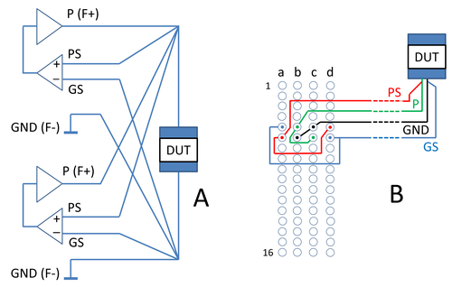

Connecting DPS channels in parallel
In order to achieve a higher output current, you can connect multiple DPS channels in parallel. This is called "ganging".
This limitation applies to all DPS-slot DPS channels or DC Scale channels except the floating DC Scale FVI16 and DC Scale PVI8 channels.
With exception of XPS256, the channels of each ganged group have to be in sequence, for example 11, 12, 13, 14, 21, etc. One channel within a ganged group is the master channel. All other channels within a ganged group are slaves.
Connections on the DUT board
Wire all power (Force+) and ground (Force-) pins and all sense and ground pins on the DUT board according to the figure A below. To avoid introducing unwanted potential differences between DUT pins and the ganged connections, make the connection as close as possible to the supply pin.

When utilizing a large number of DPS channels and ganged DPSs, you can simplify the configuration by connecting the power, ground, sense, and ground sense lines in the pogo area (B), instead of routing each line individually to the DUT (A).
Configuration B is an example for the ganging of two DPS128 channels. Note that it is not sufficient to connect only the master channel. The other channels must be connected in the pogo block area.
DC Scale AVI64
DC Scale AVI64 channels can be ganged within groups of eight channels. The AVI64 card additionally provides maximum eight ganging groups for ganging of arbitrary channels across the complete card (SmarTest 8.1.0 and higher). Ganging across cards is not supported. For details on the ganging of AVI64 channels see AVI64 ganged and AVI64 ganged wiring.
DC Scale DPS128, DPS64
Ganging for the DC Scale DPS128, DPS64 channels is only possible within one card. See also DPS128/DPS64 functionality and features.
DC Scale DPS32, and VI32 (SmarTest 7)
Ganging for the DC Scale DPS32, and VI32 channels is only possible within one card. See also DPS32 functionality and features and VI32 functionality and features.
DC Scale FVI16 (SmarTest 7)
Any combination of up to sixteen channels can be ganged within one card. Each FVI16 card supports up to 8 independent ganging groups. For details on the ganging of FVI16 channels see FVI16 ganged and FVI16 ganged wiring.
DC Scale PVI8 power supplies (SmarTest 7)
DC Scale PVI8 channels can be ganged across PVI8 cards. For details on the ganging of PVI8 channels see PVI8 ganged and PVI8 ganged wiring and ganging control pogo pins.
DC Scale UHC4 / UHC4T power supply
The parallel connection of DC Scale UHC4 channels (SmarTest 7 only) and UHC4T channels (SmarTest 7 and 8) is supported for any number of successive channels within a card and any number of cards within a test head.
Cross-card ganging requires a daisy chain connection from the last channel of a card to the first channel of the next card within the ganging group: On the DUT board, the "Gang_out" pin is to be wired to the "Gang_in" pin of the next card.
The combination of UHC4 and UHC4T within the same ganging group is not supported.
For details on the ganging of UHC4/UHC4T channels see Example 2: Ganging two UHC4 cards in UHC4 / UHC4T DUT board wiring schemes.
DC Scale XPS256
DC Scale XPS256 channels can be ganged for any number of channels within a card. Flexible ganging allows channels to be assigned to a ganging group, even if they are not consecutive. Flexible ganging across XPS256 cards is supported for up to 4096 channels. For details on the ganging of XPS256 channels see XPS256 ganged and XPS256 ganged wiring.
General Purpose DPS (SmarTest 7)
Each channel of the General Purpose DPS delivers a maximum current of 8 A. The maximum current is limited to 16 A, regardless of whether you use the channels independently or in a master-slave configuration. See also Ganging GP-DPS Channels.
Functional changes
- Introduced before SmarTest 6.3.2
- SmarTest 6.5.0: DC Scale UHC4 card added.
- SmarTest 7.3.1: DC Scale PVI8 card added.
- SmarTest 7.3.2: DC Scale UHC4T card added.
- SmarTest 7.4.0: DC Scale AVI64 card added.
- SmarTest 7.5.0: DC Scale FVI16 card added.
- SmarTest 7.10.1 / 8.3.4: DC Scale XPS256 card added.